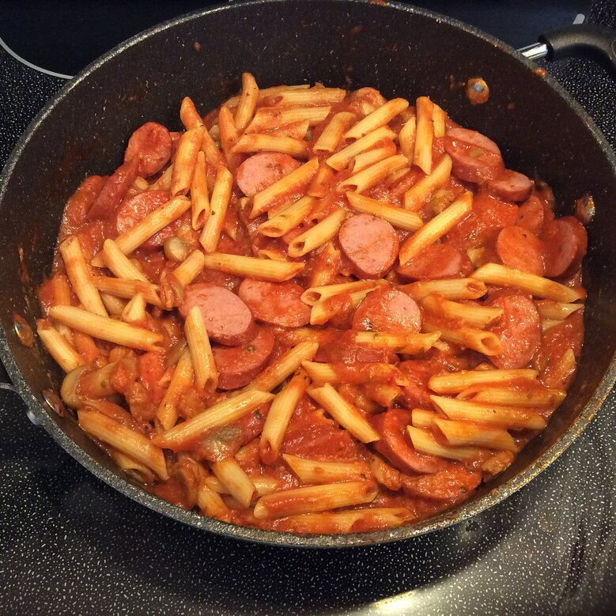

Four Cheese Margherita Pizza

Description
This smoked sausage & mushroom pasta marinara recipe is incredibly delicious with a very short total completion time on top of it's incredible taste.
The recipe has a prep time of 5 minutes and a cook time of 10 minutes, so the recipe only requires a mere 15 minutes to complete.
The recipe is for 6 servings, please adjust the serving size to adjust the amount of ingredients
needed.
Nutrition Facts
Per Serving: 506 calories; protein 18.6g; carbohydrates
49.4g; fat 24.7g; cholesterol 49.7mg; sodium 1189.8mg.
Ingredients
- 1 (14 ounce) package Hillshire Farm® Smoked Sausage, diagonally cut into 1/4-inch slices
- 8 ounces pasta, cooked and drained
- 1 cup cremini or button mushrooms, quartered
- 3 cups prepared marinara sauce
- 1/2 cup grated Parmesan cheese (optional)
Steps
- Prepare pasta according to package directions; drain and set aside.
- Saute sausage and mushrooms in a large skillet over medium-high heat for 5 minutes, turning occasionally.
- Add marinara sauce and simmer over medium-high heat for 5 minutes. Remove from heat, stir in Parmesan cheese. Add pasta to sauce and toss.